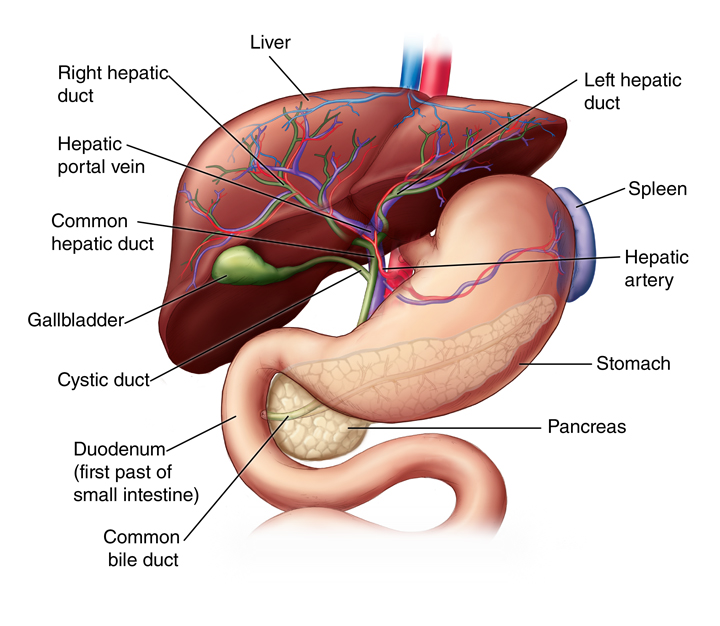

The liver 🧬 is one of the largest and most important
organs in the human body 🧍♂️. It is located on the right
side of the abdomen 📍, just below the lungs 🫁.
Its main function is to clean the blood 🩸 by removing
toxins ☠️ and harmful substances that enter the body
through food 🍔, drinks 🥤, or air 🌬️. This makes the liver
a vital detoxification organ 🛡️.
The liver also produces bile 🟡, a substance that helps
break down fats 🧈 during digestion 🍽️, making it easier
for the body to absorb nutrients 🧬.
In addition, the liver stores energy ⚡ in the form of
glycogen 🍬 and releases it when the body needs it, helping
to maintain stable energy levels throughout the day 🔄.
It also produces important proteins 🧩 that help with blood
clotting 🩹 and healing, preventing excessive bleeding when
injuries occur ⚠️.
Another important role of the liver is regulating chemicals
⚖️ in the blood and supporting the immune system 🛡️ to
fight infections 🦠.
The liver works continuously 🔄 without stopping,
performing hundreds of functions to keep the body balanced ⚡
and healthy 💚.
